Cómo llevar un partido o un torneo de Ultimate desde el celular: los dos modos, el tablero, la planilla, el fixture, la carga desde Excel, los resultados y el link en vivo. Seguí los pasos; no hace falta saber de tecnología.
Ultimate Clock es una app gratis para llevar partidos y torneos de Ultimate Frisbee desde el celular o la tablet: reloj del partido, goles, llamados, pull, time outs, planilla, fixture y tabla de posiciones.
Instalala como app. iPhone: botón Compartir → Agregar a inicio. Android: menú ⋮ → Instalar app.
Funciona sin internet. Abrila una vez con señal; después anda en la cancha aunque no haya.
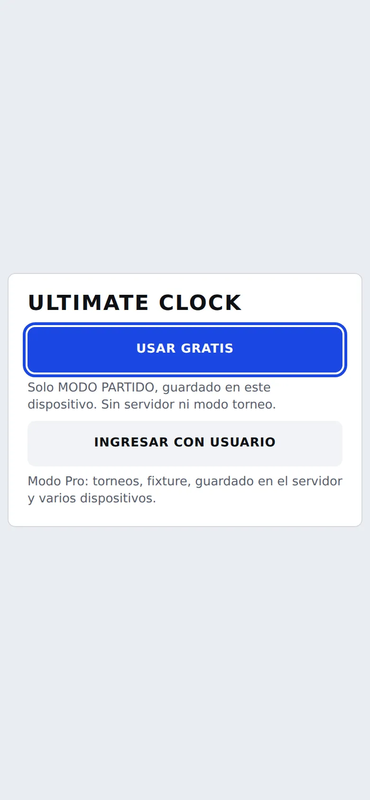
Entrar o usar sin cuenta
¿Con cuenta o sin cuenta?
Al abrir la app elegís:
ENTRAR con usuario y contraseña: todo se guarda en el servidor al instante. Podés usar varios teléfonos a la vez, seguir un partido en otro dispositivo si el tuyo falla y compartir el fixture en vivo.
USAR SIN CUENTA: todo queda solo en ese teléfono. Para conservarlo o pasarlo a otro, exportalo.
Las cuentas las da la organización (por ahora Ultimate Frisbee Mendoza). Si no tenés una, usá la app sin cuenta: funciona igual.
Consejo: antes del partido subí el volumen y tocá MENU → PROBAR SONIDO.
Tocá + GOL del equipo que anotó. El gol se suma al instante.
Se abre el detalle: elegí (o escribí) quién dio el pase y quién hizo el gol.
GUARDAR DETALLE lo registra; OMITIR deja el gol sin nombres; DESHACER GOL lo borra si fue un error.
Tipo de llamado
Registrar un llamado
Tocá INICIAR en el llamado del equipo que lo hizo: empieza a correr el tiempo.
Elegí qué fue (Falta, Violación, Pick, Travel, Conteo, Gol discutido, Lesión, Tiempo de Espíritu). Cada uno tiene una explicación corta.
REGISTRAR. Si fue un error, CANCELAR LLAMADO.
La app solo anota: no decide sanciones.
Contadores en marcha
Pull
INICIAR en Pull cuando los equipos se preparan. Silbatos a los 45 s (1), 60 s (2), 75 s (3) y 90 s (4, tiempo cumplido).
Time out
Tocá el botón del equipo que lo pide y confirmá. Se descuenta de su cupo; en el segundo tiempo el cupo se renueva.
Medio tiempo
Al cumplirse el primer tiempo el reloj se detiene y aparece un aviso: INICIAR MEDIO TIEMPO y después INICIAR SEGUNDO TIEMPO.
Importante: si bloqueás el teléfono o cambiás de app, los avisos suenan recién al volver. Dejá la app abierta durante el partido; mientras un reloj corre, la pantalla no se apaga sola.
MENU → PLANILLA muestra el tanteador, los time outs que quedan y cada evento con su minuto. Desde Registro rápido también anotás goles, llamados, time outs e incidencias.
Exportar
PDF para imprimir o mandar a la organización · CSV para Excel · JSON copia completa · ENVIAR POR WHATSAPP resumen del partido.
Guardar el partido
Al terminar, MENU → GUARDAR. El partido se cierra y aparece en Planillas guardadas, donde lo abrís, exportás o borrás. En modo torneo, recién al guardar suma en la tabla.
Claro para el sol, oscuro para la noche. Idioma de la app.
＋ NUEVO PARTIDO · PLANILLA · GUARDAR
Empezar otro partido, ver la planilla y cerrar el partido.
ENTRAR AL MODO TORNEO / VER TORNEO · SALIR DEL MODO TORNEO
Pasar de un modo al otro; en torneo, VER TORNEO abre el fixture.
Cuenta
INICIAR SESIÓN o el estado de la sincronización: ✓ SINCRONIZADO, SINCRONIZANDO… o, si no hay internet, SIN CONEXIÓN · SINCRONIZAR AHORA. SALIR DE ESTE USUARIO vuelve al modo sin usuario.
Sonido y pantalla
Activar y probar el sonido, pantalla completa y ⚙ EDITAR TIEMPOS.
Ayuda
CÓMO USAR LA APP (recorrido guiado), MANUAL DE USUARIO (este manual) e INFO.
REINICIAR CONTADORES
Pone el partido actual en cero (pide confirmar). No borra planillas guardadas.
Con sesión iniciada, cada gol, llamado o cambio se guarda en el servidor al instante. No hay que hacer nada: la app sincroniza sola todo el tiempo.
Indicador arriba (dos flechas): verde = todo guardado; rojo = hay cambios por subir o no hay conexión.
Sin internet en la cancha la app sigue funcionando y sube todo cuando vuelve la señal. Si querés forzarlo, MENU → SIN CONEXIÓN · SINCRONIZAR AHORA.
Si dos teléfonos cambiaron lo mismo, aparece un cartel para elegir cuál es el oficial.
Salir de este usuario
Si prestaste el teléfono o te equivocaste de cuenta: MENU → SALIR DE ESTE USUARIO. La app se vacía de los datos de esa cuenta (siguen en el servidor) y vuelve al modo sin usuario, sin pedirte nada. Si había cambios sin subir, te avisa antes. Para volver: MENU → INICIAR SESIÓN.
Retomar en otro dispositivo
Si el teléfono falla
Entrá con la misma cuenta en otro teléfono o tablet. La app avisa que hay un partido en curso en otro dispositivo y muestra el marcador. Tocá RETOMAR AQUÍ: seguís desde el último evento, con el reloj pausado en ese momento. Revisalo antes de seguir.
Tocá DESCARGAR PLANTILLA. Se baja un archivo .xlsx.
Abrilo en Excel, Google Sheets, Numbers o LibreOffice y completalo (ver abajo).
Guardalo como .xlsx. En Google Sheets: Archivo → Descargar → Microsoft Excel.
En la app tocá IMPORTAR EXCEL y elegí el archivo.
El bloque está al crear el torneo y en la pestaña EQUIPOS. Si ya cargaste equipos, la plantilla viene con ellos, para completarlos o corregirlos.
Cómo es la plantilla
Hoja
Qué se completa
INSTRUCCIONES
Nada: explica los pasos, los tipos de fixture y los colores.
COLORES
Nada: muestra los 24 colores, cada uno con su muestra pintada.
TORNEO
Nombre del torneo y Tipo de fixture (lista: Todos contra todos / Eliminación simple).
EQUIPO 1 … EQUIPO 8
Una hoja por equipo: Equipo (nombre), Color (lista o un código como #1B47E2) y debajo los jugadores, uno por fila: N.º camiseta (opcional) y Nombre y apellido.
Completá solo las celdas amarillas; no cambies los títulos grises. A la derecha de cada una hay una indicación con una flecha (←) que dice qué poner, y al tocar la celda aparece un recuadro con la misma ayuda.
El color se elige de una lista: tocá la celda Color, abrí la lista con la flecha ▼ y elegí. La celda se pinta del color elegido, así ves cuál es. También podés escribir un código como #1B47E2.
¿Más de 8 equipos? Copiá una hoja de equipo: clic derecho en la pestaña → Mover o copiar → Crear una copia. Las hojas de equipo vacías se ignoran.
También sirve una sola hoja con columnas Equipo · Número · Jugador (por ejemplo, la que exporta un formulario).
Antes de cargar nada, la app muestra lo que encontró: equipos, cantidad de jugadores, el nombre y el tipo de fixture, y avisos si algo no cierra (un número sin nombre, un color desconocido, un equipo repetido).
CREAR TORNEO / CREAR TORNEO NUEVO: arma un torneo con esos equipos.
AGREGAR A …: suma los equipos al torneo abierto. Los que tienen el mismo nombre se actualizan; los jugadores con goles registrados no se quitan.
El cuadro o las fechas, para jugar y cargar resultados.
EQUIPOS
Los equipos y sus jugadores, ＋ AGREGAR EQUIPO, ▶ EMPEZAR PARTIDO DEL TORNEO, la carga desde Excel y el orden y siembra.
TABLA
Posiciones, resultados, goleadores y pases.
AJUSTES
Tiempos, puntos y desempates, archivo del torneo, cambiar nombre, eliminar y torneo nuevo.
Si tenés más de un torneo, arriba aparece Mis torneos para pasar de uno a otro.
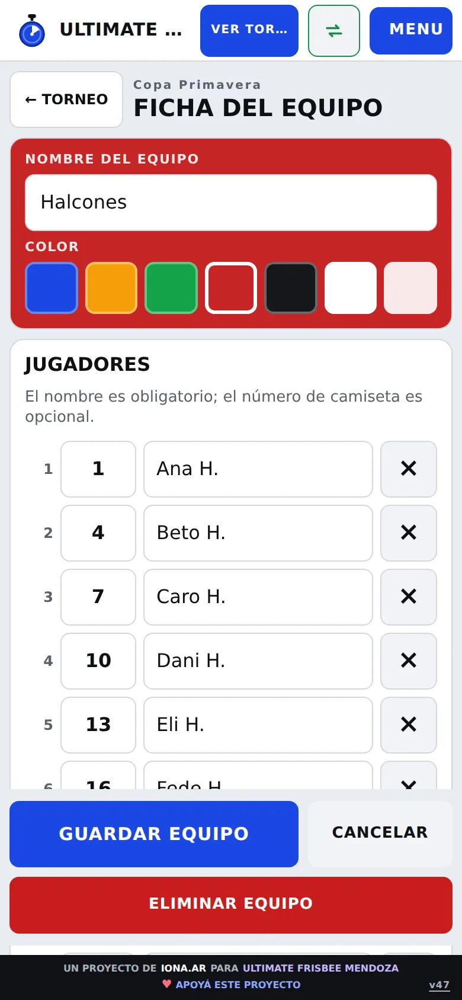
Ficha del equipo
Cargar o corregir un equipo a mano
＋ AGREGAR EQUIPO, o tocá un equipo para editarlo.
Nombre y color.
Jugadores: número (opcional) y nombre en cada fila. ¿Tenés la lista en un mensaje? Pegala en Pegar una lista de jugadores.
GUARDAR EQUIPO.
Orden y siembra
En EQUIPOS, con ▲ ▼ ordenás los equipos. En eliminación, el orden define los cruces: el 1 juega con el último, y el 1 y el 2 solo se pueden cruzar en la final. Después de cambiarlo, en FIXTURE tocá REARMAR CRUCES PENDIENTES. HISTORIAL muestra los partidos y goleadores de cada equipo.
En la pestaña FIXTURE elegís el tipo tocando una de las dos tarjetas:
Todos contra todos (liga): cada equipo juega una vez con cada uno. Gana el que suma más puntos.
Eliminación (llaves): el que pierde queda afuera, hasta la final. Si los equipos no son 4, 8, 16…, algunos pasan directo a la ronda siguiente.
Tocá GENERAR FIXTURE. Mientras no haya partidos jugados podés cambiar el tipo cuando quieras, desde las mismas tarjetas: el fixture se rearma al instante. Con partidos jugados el tipo queda fijo y la app te explica por qué.
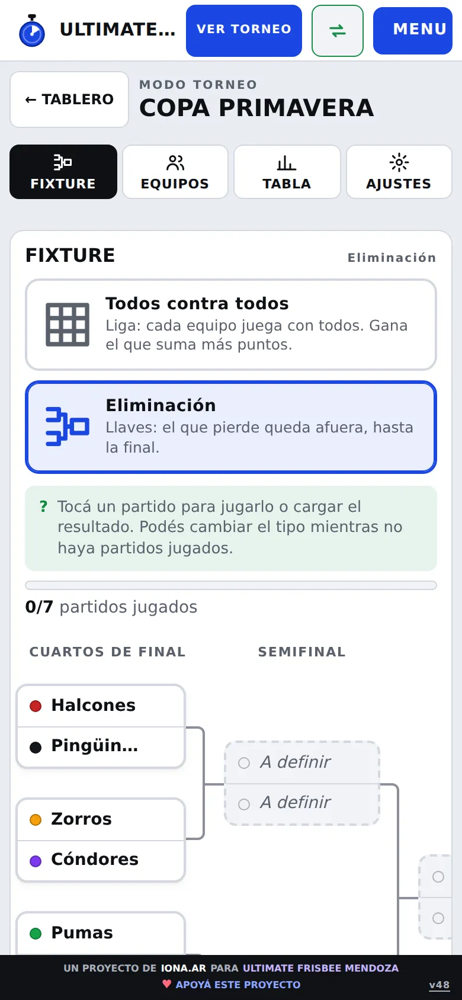
Eliminación en el teléfono
Eliminación: el cuadro de llaves
Cada columna es una fase (cuartos, semifinal, final) y las líneas muestran por dónde avanza cada ganador. Arriba de la final está el campeón. En el teléfono el cuadro se desliza de costado con el dedo.
Verde: el equipo que ganó ese cruce; el que perdió queda gris.
FINALIZADO partido terminado · ● EN JUEGO se está jugando, con el marcador al momento · borde punteado: todavía no se sabe quién juega.
La barra de arriba dice cuántos partidos se jugaron y cuántos están en juego.
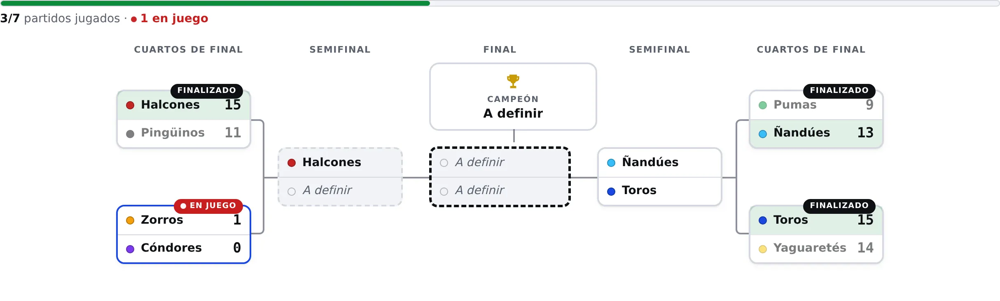
En tablet o computadora el cuadro se abre a los dos lados, con la final en el centro.
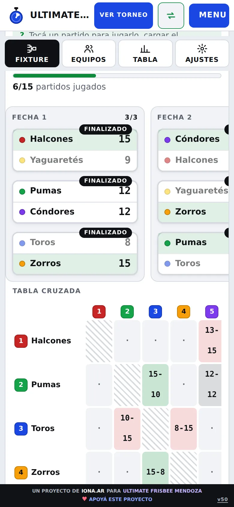
Todos contra todos: fechas
Todos contra todos: fechas y tabla cruzada
Cada columna es una fecha, con sus partidos y cuántos se jugaron (por ejemplo 3/3). Si los equipos son impares, en cada fecha uno queda libre. Las fechas se deslizan de costado.
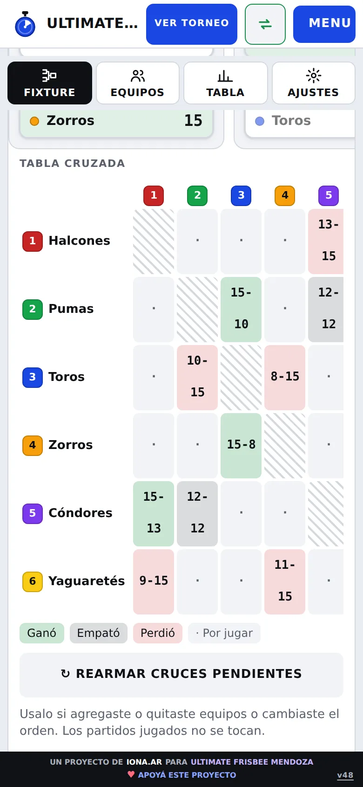
Tabla cruzada
La tabla cruzada muestra cada resultado desde el equipo de la fila: verde ganó, rojo perdió, gris empató, · por jugar. Tocá una celda para abrir ese partido.
Tocá cualquier partido del fixture. Según cómo esté, podés:
▶ JUGAR ESTE PARTIDO: abre el tablero con los dos equipos ya elegidos y el partido queda ligado a ese cruce.
¿Ya se jugó? Si se jugó sin la app (o en un papel), escribí el resultado y GUARDAR RESULTADO. Cuenta en el fixture y en la tabla.
También podés empezar un partido desde EQUIPOS → ▶ EMPEZAR PARTIDO DEL TORNEO eligiendo los dos equipos.
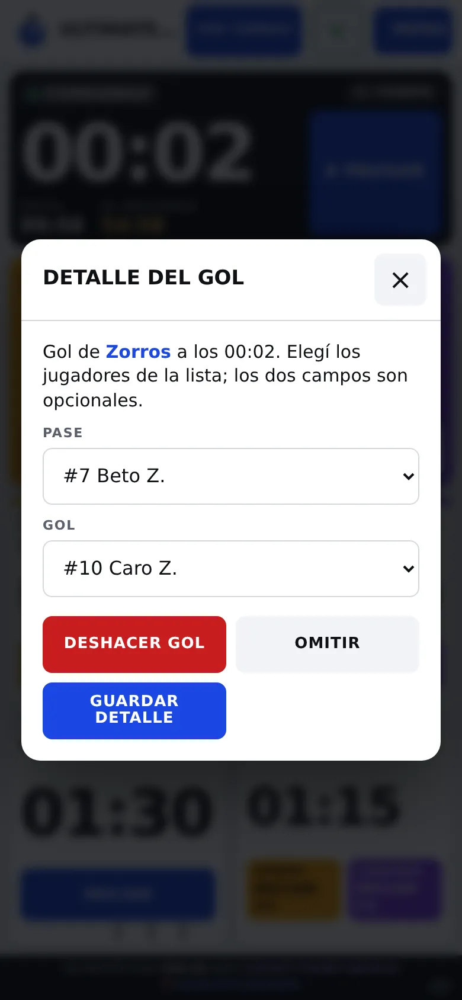
Gol en un partido del torneo
Durante el partido del torneo
El tablero funciona igual. En cada gol elegís de la lista quién dio el pase y quién hizo el gol: así se arman los goleadores. Al terminar, MENU → GUARDAR.
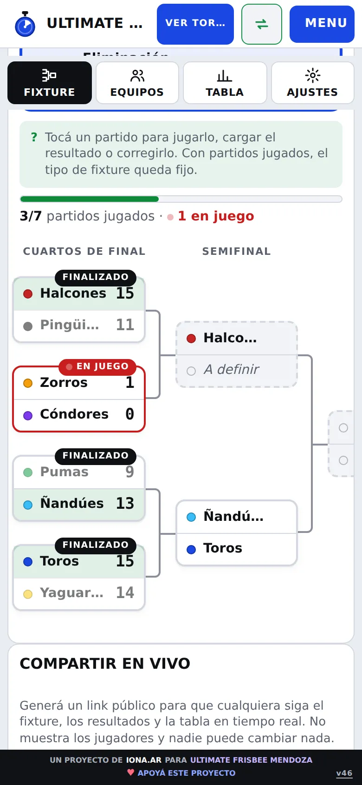
Partido en juego en el fixture
Tocá VER TORNEO (arriba) en cualquier momento: el partido que se está jugando aparece ● EN JUEGO con el marcador al instante, también si se juega en otro teléfono de la misma cuenta.
Corregir un resultado
Corregir un resultado
¿Quedó mal un resultado o no se sincronizó bien? Tocá el partido, cambiá los números y GUARDAR CORRECCIÓN. El fixture, el ganador que avanza y la tabla se actualizan solos, y la corrección queda anotada en la planilla del partido (VER PLANILLA).
En eliminación no puede haber empate. Si un partido terminó empatado, aparece JUGAR DESEMPATE, o corregí el resultado.
En un torneo grande hay varias canchas y varias personas. Entrá con la misma cuenta en cada teléfono o tablet: cada dispositivo puede llevar su propio partido al mismo tiempo, y todos ven el avance de los demás.
Si ya hay un torneo en marcha, al entrar la app pregunta cómo seguir:
MODO PARTIDO: un partido suelto, como siempre.
MODO TORNEO: vas al torneo y elegís uno de sus partidos.
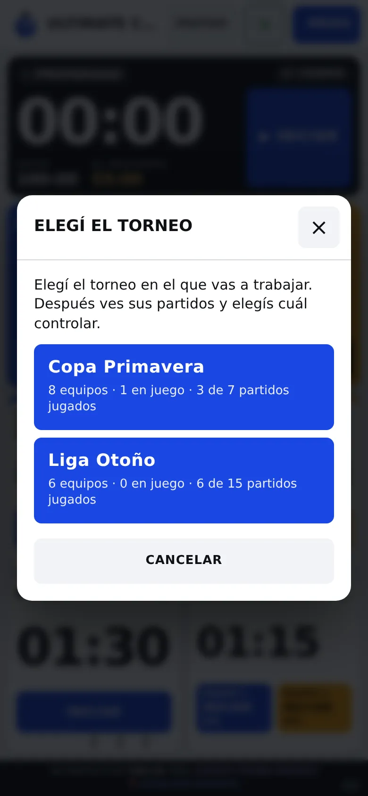
Elegir el torneo
Con MODO TORNEO primero elegís el torneo (cada uno muestra cuántos equipos tiene, cuántos partidos se están jugando y cuántos terminaron). Después ves el fixture con todos los partidos y tocás el que querés controlar.
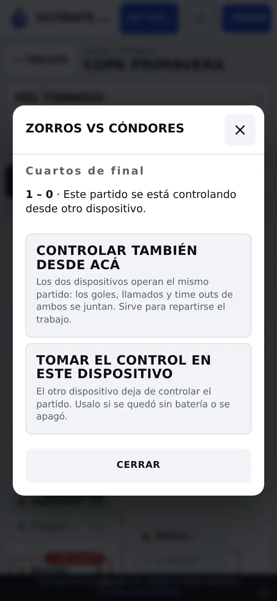
Un partido que ya se está controlando
Si tocás un partido ● EN JUEGO que lleva otro dispositivo, elegís:
CONTROLAR TAMBIÉN DESDE ACÁ: los dos dispositivos operan el mismo partido. Por ejemplo, uno lleva el reloj y otro anota los goles. Los goles, llamados y time outs de ambos se juntan en pocos segundos, y el reloj queda como lo dejó quien lo tocó último. Arriba aparece ⇄ mientras el partido es compartido.
TOMAR EL CONTROL EN ESTE DISPOSITIVO: el control pasa a este dispositivo y el otro deja de controlar el partido (le avisa). Usalo si el otro se apagó o se quedó sin batería. El reloj queda pausado en el último evento: revisalo antes de seguir.
Ojo: si dos personas anotan el mismo gol, se cuentan dos. Repártanse el trabajo; para sacar uno repetido usá DESHACER GOL o el botón − del marcador.
Sin internet: cada dispositivo sigue anotando y, cuando vuelve la señal, se juntan los datos de los dos sin perder nada. Cuando alguien guarda la planilla, el partido queda cerrado en todos.
Posiciones: PJ partidos jugados, DG diferencia de goles, PTS puntos. Debajo de cada equipo: G ganados, E empatados, P perdidos y goles a favor y en contra.
Resultados: los últimos partidos guardados.
Goleadores y pases: cuenta los goles donde se eligió al jugador de la lista.
Los puntos (por defecto victoria 3, empate 1, derrota 0) y el orden de los desempates (diferencia de gol, goles a favor, cabeza a cabeza) se cambian en AJUSTES.
Para que familias, equipos o cualquiera en otro lugar siga el torneo en tiempo real:
Iniciá sesión (hace falta cuenta).
En FIXTURE, abajo, tocá COMPARTIR FIXTURE EN VIVO.
Aparece el link: COPIAR, ENVIAR POR WHATSAPP o ABRIR.
El link tiene este formato: iona.ar/ultimateclock/vivo.html?u=usuario&t=torneo.
Muestra el fixture, los resultados, los partidos en juego con su marcador y la tabla. No muestra jugadores y nadie puede cambiar nada.
Se actualiza solo cada pocos segundos; no hace falta recargar.
DEJAR DE COMPARTIR apaga el link. Si lo volvés a compartir, es el mismo link.
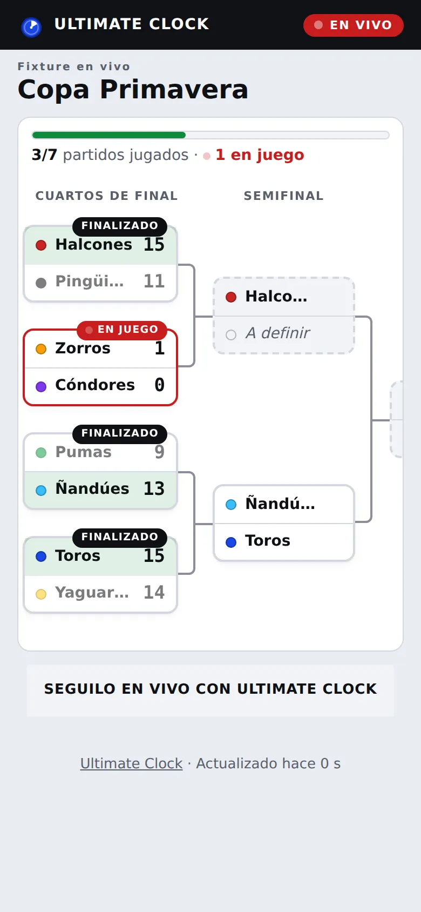
Lo que ve quien abre el link
Quien abre el link ve el nombre del torneo, la etiqueta ● EN VIVO, el fixture y, en ligas, la tabla de posiciones. Abajo dice hace cuánto se actualizó.
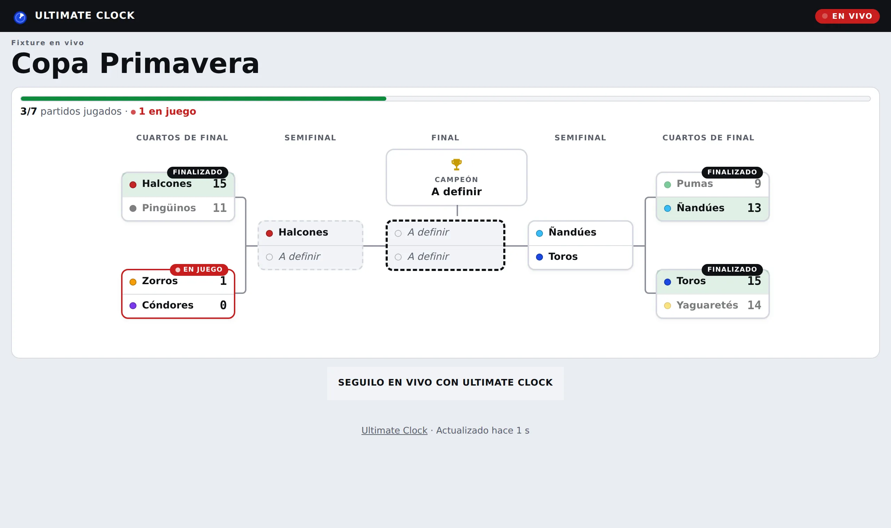
En una computadora o un televisor se ve el cuadro completo: ideal para proyectarlo en la sede.↑ Volver al índice
17Ajustes, archivo y varias canchas
Pestaña AJUSTES
Tiempos del torneo
Todos los partidos del torneo usan este perfil (WFDF, USA Ultimate o uno propio con ＋ NUEVO PERFIL DE TIEMPOS).
Puntos y desempates
Cuántos puntos da ganar, empatar y perder, y en qué orden se desempata. GUARDAR REGLAS.
Archivo del torneo
Archivo del torneo
EXPORTAR TORNEO: un archivo .json con equipos, jugadores, fixture y partidos guardados. Sirve de copia o para pasarlo a otro teléfono.
CSV: cada jugador con su equipo, goles y pases, para Excel.
EXCEL: la plantilla con los equipos actuales.
IMPORTAR: carga un .json de torneo o un Excel.
CAMBIAR NOMBRE, ELIMINAR TORNEO y ＋ NUEVO TORNEO.
Varias canchas al mismo tiempo
Con cuenta (lo más simple): cada mesa entra con la misma cuenta. Cada partido que se juega se ve en todos los teléfonos y en el link en vivo, sin pasar archivos.
Sin cuenta: la organización arma el torneo, lo exporta y manda el archivo a cada mesa. Cada mesa lo importa, juega y guarda sus partidos. Al final, cada mesa exporta y manda su archivo, y la organización los importa uno por uno: los partidos se juntan sin repetirse.
Al importar un torneo que ya tenías, los equipos y jugadores pasan a ser los del archivo. Los partidos guardados nunca se pierden.
Subí el volumen, sacá el modo silencio y tocá MENU → ACTIVAR SONIDO y PROBAR SONIDO. En iPhone, el botón lateral de silencio también apaga la app.
Las flechas de arriba están en rojo.
Hay cambios por subir o no hay internet. La app sigue funcionando; sube todo al volver la señal. Si dice que hay un conflicto, elegí qué dispositivo es el oficial.
No puedo cambiar el tipo de fixture.
Ya hay partidos jugados o en juego. Si necesitás otro formato, creá un torneo nuevo con los mismos equipos (podés usar la plantilla de Excel).
"No pude leer ese Excel".
Guardalo como .xlsx (no .xls, .csv ni .numbers) y usá la plantilla.
El Excel dice que no encontró equipos.
Completá en cada hoja de equipo la celda Equipo y los jugadores debajo de Nombre y apellido, sin cambiar los títulos.
El link en vivo dice que no existe.
Se dejó de compartir o el torneo se borró. Volvé a tocar COMPARTIR FIXTURE EN VIVO.
No aparecen mis partidos o torneos.
Sin cuenta, los datos son de cada teléfono y navegador: importá el archivo exportado. Con cuenta, revisá que entraste con el mismo usuario.
Dice "Partido abierto en otra pestaña".
La app está abierta dos veces. Cerrá una y recargá.
How to run an Ultimate game or tournament from your phone: both modes, the board, the scoresheet, the fixture, loading from Excel, results and the live link. Follow the steps; no tech skills needed.
Ultimate Clock is a free app to run Ultimate Frisbee games and tournaments from a phone or tablet: game clock, goals, calls, pull, time outs, scoresheet, fixture and standings.
Install it as an app. iPhone: Share button → Add to Home Screen. Android: ⋮ menu → Install app.
Works offline. Open it once with signal; after that it works at the field without internet.
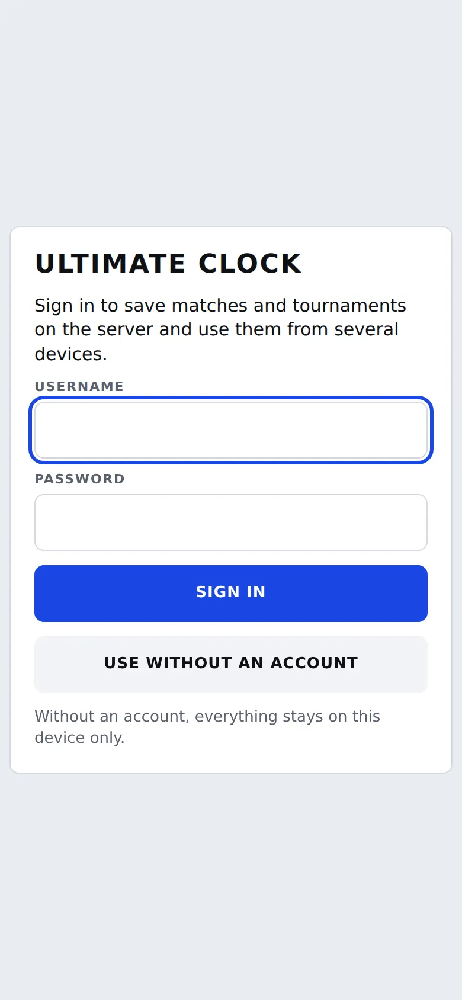
Sign in or use without an account
With or without an account?
When the app opens you choose:
SIGN IN with username and password: everything is saved on the server instantly. You can use several phones at once, continue a game on another device if yours fails and share the fixture live.
USE WITHOUT AN ACCOUNT: everything stays only on that phone. Export it to keep it or move it to another device.
Accounts are given by the organizers (currently Ultimate Frisbee Mendoza). If you do not have one, use the app without an account: it works the same.
Tip: before the game turn the volume up and tap MENU → TEST SOUND.
Tap + GOAL for the team that scored. The goal counts right away.
The detail opens: pick (or type) who made the assist and who scored the goal.
SAVE DETAILS logs it; SKIP leaves the goal without names; UNDO GOAL removes it if it was a mistake.
Call type
Logging a call
Tap START on the call timer of the team that made it: the time starts.
Pick what it was (Foul, Violation, Pick, Travel, Count, Disputed goal, Injury, Spirit timeout). Each has a short explanation.
RECORD. If it was a mistake, CANCEL CALL.
The app only records: it does not decide penalties.
Timers running
Pull
START on Pull when teams get ready. Whistles at 45 s (1), 60 s (2), 75 s (3) and 90 s (4, time is up).
Time out
Tap the button of the team asking for it and confirm. It comes off their allowance; it resets in the second half.
Halftime
When the first half ends the clock stops and a notice appears: START HALFTIME and then START SECOND HALF.
Important: if you lock the phone or switch apps, alerts only sound when you come back. Keep the app open during the game; while a timer runs the screen stays on.
MENU → SCORESHEET shows the score, time outs left and every event with its minute. From Quick log you can also log goals, calls, time outs and incidents.
Export
PDF to print or send to the organizers · CSV for Excel · JSON full copy · SEND BY WHATSAPP game summary.
Saving the game
When it ends, MENU → SAVE. The game closes and shows up in Saved scoresheets, where you open, export or delete it. In tournament mode it only counts in the standings once saved.
When signed in, every goal, call or change is saved on the server instantly. You do not need to do anything: the app syncs by itself all the time.
Indicator at the top (two arrows): green = everything saved; red = changes waiting or no connection.
No internet at the field? The app keeps working and uploads everything when signal returns. To force it, MENU → OFFLINE · SYNC NOW.
If two phones changed the same thing, a notice lets you choose which one is official.
Log out of this user
If you lent the phone or used the wrong account: MENU → LOG OUT OF THIS USER. The app clears that account's data from the device (it stays on the server) and goes back to no-user mode without asking for anything. If there were changes not uploaded yet, it warns you first. To come back: MENU → SIGN IN.
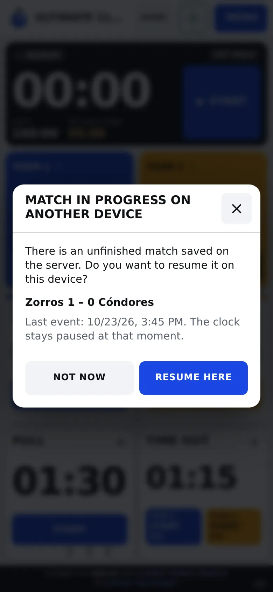
Resume on another device
If the phone fails
Sign in with the same account on another phone or tablet. The app says there is a game in progress on another device and shows the score. Tap RESUME HERE: you continue from the last event, with the clock paused at that moment. Check it before going on.
Tap DOWNLOAD TEMPLATE. An .xlsx file is downloaded.
Open it in Excel, Google Sheets, Numbers or LibreOffice and fill it in (see below).
Save it as .xlsx. In Google Sheets: File → Download → Microsoft Excel.
In the app tap IMPORT EXCEL and pick the file.
The block is on the create-tournament screen and on the TEAMS tab. If you already loaded teams, the template includes them so you can complete or fix them.
What the template looks like
Sheet
What you fill in
INSTRUCTIONS
Nothing: it explains the steps, fixture types and colors.
COLORS
Nothing: it shows the 24 colors, each with a painted swatch.
TOURNAMENT
Tournament name and Fixture type (list: Round robin / Knockout).
TEAM 1 … TEAM 8
One sheet per team: Team (name), Color (list or a code like #1B47E2) and below, the players, one per row: Jersey number (optional) and Player full name.
Fill in only the yellow cells; do not change the grey titles. To the right of each one there is a hint with an arrow (←) saying what to enter, and clicking the cell shows a small box with the same help.
Pick the color from a list: click the Color cell, open the list with the ▼ arrow and choose. The cell turns the color you chose, so you can see it. You can also type a code like #1B47E2.
More than 8 teams? Copy a team sheet: right-click the tab → Move or Copy → Create a copy. Empty team sheets are ignored.
A single sheet with columns Team · Number · Player also works (for example, a form export).
Before loading anything, the app shows what it found: teams, number of players, tournament name and fixture type, and warnings if something is off (a number without a name, an unknown color, a repeated team).
CREATE TOURNAMENT / CREATE NEW TOURNAMENT: builds a tournament with those teams.
ADD TO …: adds the teams to the open tournament. Teams with the same name are updated; players with recorded goals are not removed.
The bracket or the rounds, to play and enter results.
TEAMS
Teams and their players, ＋ ADD TEAM, ▶ START TOURNAMENT MATCH, loading from Excel and the order and seeding.
STANDINGS
Standings, results, scorers and assists.
SETTINGS
Times, points and tiebreakers, tournament file, rename, delete and new tournament.
If you have more than one tournament, My tournaments appears at the top to switch between them.
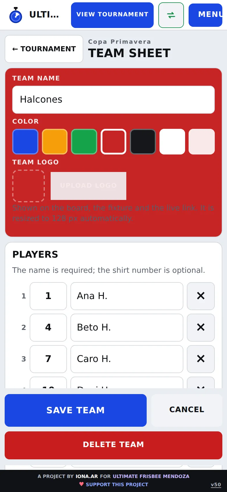
Team card
Adding or fixing a team by hand
＋ ADD TEAM, or tap a team to edit it.
Name and color.
Players: number (optional) and name on each row. Have the list in a message? Paste it in Paste a list of players.
SAVE TEAM.
Order and seeding
In TEAMS, use ▲ ▼ to order teams. In knockout the order sets the matchups: #1 plays the last one, and #1 and #2 can only meet in the final. After changing it, tap REBUILD PENDING MATCHES in FIXTURE. HISTORY shows each team's games and scorers.
On the FIXTURE tab you choose the type by tapping one of the two cards:
Round robin (league): every team plays each other once. Most points wins.
Knockout (bracket): the loser is out, all the way to the final. If there are not 4, 8, 16… teams, some get a bye to the next round.
Tap CREATE FIXTURE. Until a match is played you can change the type whenever you want from the same cards: the fixture is rebuilt instantly. Once matches are played the type is locked and the app tells you why.
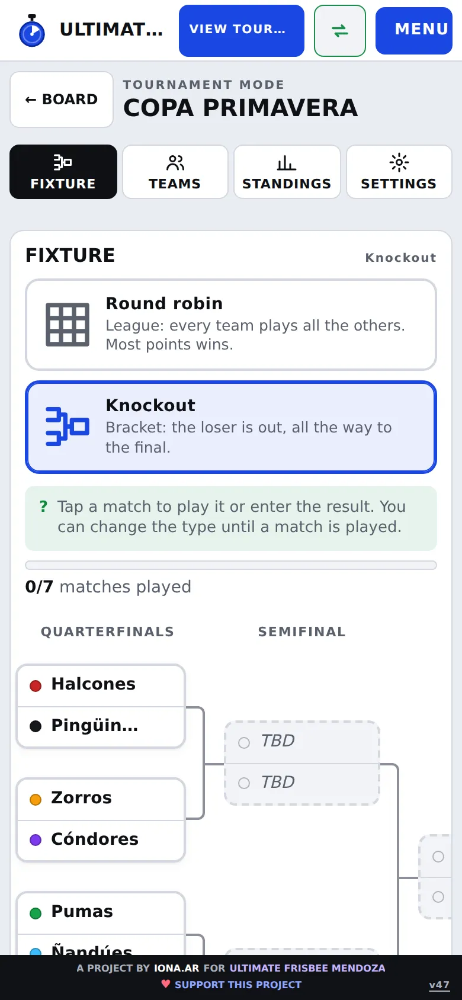
Knockout on the phone
Knockout: the bracket
Each column is a stage (quarterfinals, semifinal, final) and the lines show where each winner moves on. The champion sits above the final. On the phone, swipe the bracket sideways.
Green: the team that won that match; the loser turns grey.
FINISHED match over · ● IN PLAY being played, with the live score · dashed border: teams not known yet.
The bar at the top shows how many matches were played and how many are in play.
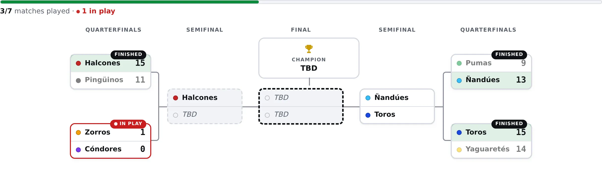
On a tablet or computer the bracket opens to both sides, with the final in the middle.
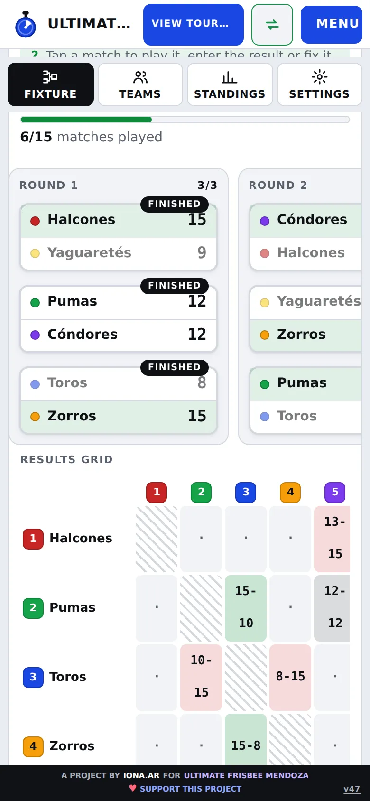
Round robin: rounds
Round robin: rounds and results grid
Each column is a round, with its matches and how many were played (for example 3/3). With an odd number of teams, one has a bye each round. Swipe the rounds sideways.
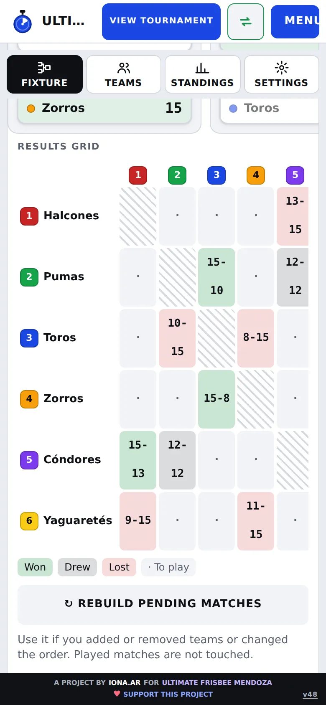
Results grid
The results grid shows each result from the row team's point of view: green won, red lost, grey draw, · to play. Tap a cell to open that match.
Tap any match in the fixture. Depending on its state you can:
▶ PLAY THIS MATCH: opens the board with both teams already picked, and the game is linked to that matchup.
Already played? If it was played without the app (or on paper), type the result and SAVE RESULT. It counts in the fixture and standings.
You can also start a game from TEAMS → ▶ START TOURNAMENT MATCH by picking both teams.
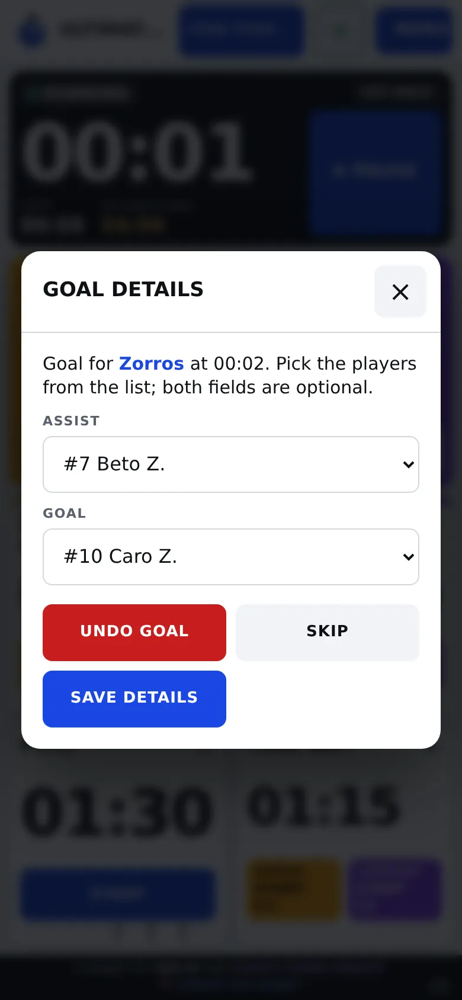
Goal in a tournament game
During a tournament game
The board works the same. For each goal pick from the list who made the assist and who scored the goal: that builds the scorers table. When it ends, MENU → SAVE.
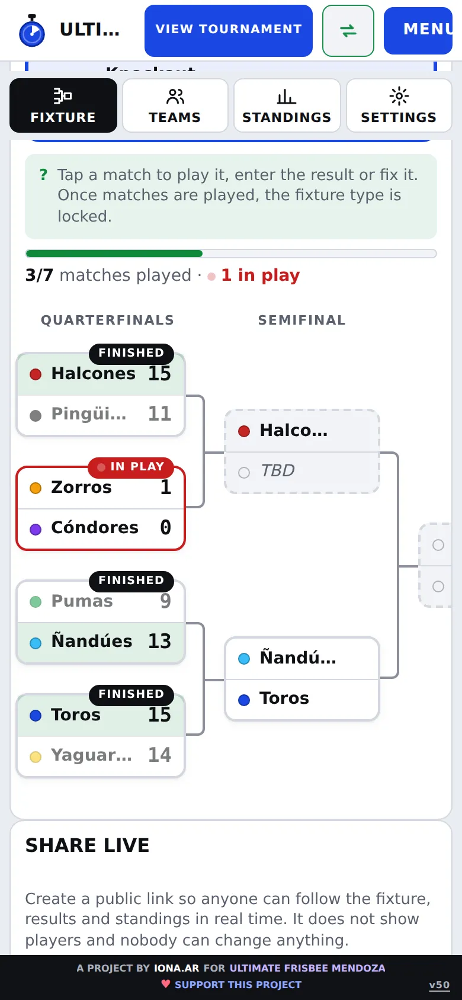
Match in play on the fixture
Tap VIEW TOURNAMENT (top) at any time: the match being played shows ● IN PLAY with the live score, even if it is played on another phone with the same account.
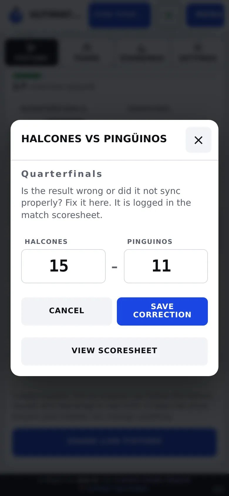
Correcting a result
Correcting a result
Is a result wrong or did it not sync properly? Tap the match, change the numbers and SAVE CORRECTION. The fixture, the winner moving on and the standings update by themselves, and the correction is logged in the game scoresheet (VIEW SCORESHEET).
Knockout matches cannot end in a draw. If one did, PLAY TIEBREAK appears, or correct the result.
A big tournament has several fields and several people. Sign in with the same account on every phone or tablet: each device can run its own match at the same time, and everyone sees how the others are going.
If a tournament is already under way, the app asks how to continue when you sign in:
MATCH MODE: a single match, as always.
TOURNAMENT MODE: you go to the tournament and pick one of its matches.
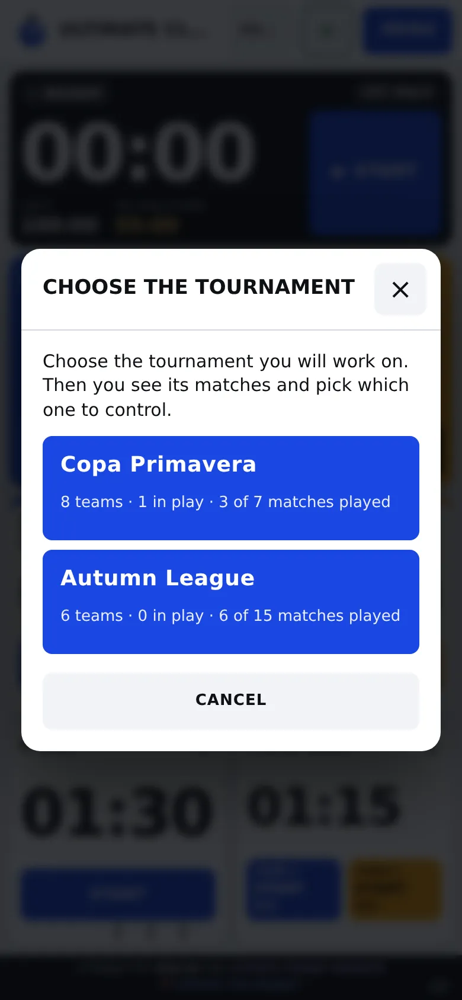
Choosing the tournament
With TOURNAMENT MODE you first choose the tournament (each shows how many teams it has, how many matches are in play and how many are finished). Then you see the fixture with all the matches and tap the one you want to control.
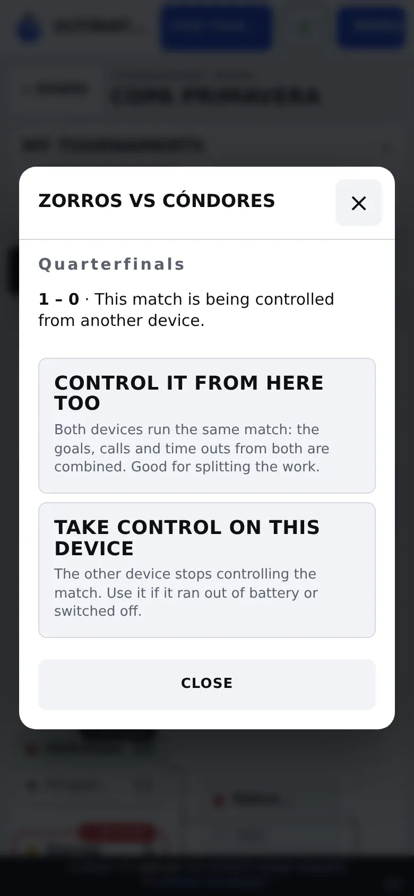
A match that is already being controlled
If you tap an ● IN PLAY match that another device is running, you choose:
CONTROL IT FROM HERE TOO: both devices run the same match. For example, one runs the clock and another records goals. The goals, calls and time outs from both are combined within seconds, and the clock stays as left by whoever touched it last. A ⇄ shows at the top while the match is shared.
TAKE CONTROL ON THIS DEVICE: control moves to this device and the other one stops controlling the match (it is told). Use it if the other one switched off or ran out of battery. The clock is paused at the last event: check it before going on.
Careful: if two people record the same goal, it counts twice. Split the work; to remove a repeated one use UNDO GOAL or the − button on the score.
No internet: each device keeps recording and, when signal returns, the data from both is combined without losing anything. When someone saves the scoresheet, the match is closed on all devices.
So families, teams or anyone elsewhere can follow the tournament in real time:
Sign in (an account is required).
In FIXTURE, at the bottom, tap SHARE LIVE FIXTURE.
The link appears: COPY, SEND BY WHATSAPP or OPEN.
The link looks like this: iona.ar/ultimateclock/vivo.html?u=username&t=tournament.
It shows the fixture, results, matches in play with their score and the standings. It does not show players and nobody can change anything.
It updates by itself every few seconds; no need to reload.
STOP SHARING turns the link off. If you share again, it is the same link.
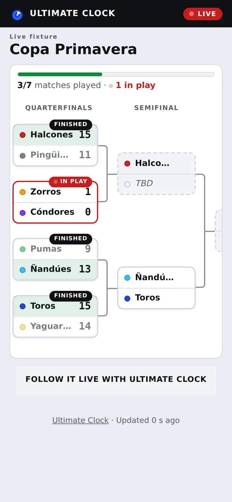
What people see when they open the link
Whoever opens the link sees the tournament name, the ● LIVE label, the fixture and, in leagues, the standings. At the bottom it says how long ago it was updated.
On a computer or a TV the whole bracket fits: great to project at the venue.↑ Back to contents
17Settings, file and several fields
SETTINGS tab
Tournament times
Every game in the tournament uses this profile (WFDF, USA Ultimate or your own with ＋ NEW TIME PROFILE).
Points and tiebreakers
How many points a win, draw and loss give, and the tiebreaker order. SAVE RULES.
Tournament file
Tournament file
EXPORT TOURNAMENT: a .json file with teams, players, fixture and saved games. Use it as a backup or to move it to another phone.
CSV: each player with team, goals and assists, for Excel.
EXCEL: the template with the current teams.
IMPORT: loads a tournament .json or an Excel file.
RENAME, DELETE TOURNAMENT and ＋ NEW TOURNAMENT.
Several fields at the same time
With an account (simplest): every table signs in with the same account. Every game played shows on every phone and on the live link, with no files to pass around.
Without an account: the organizers build the tournament, export it and send the file to each table. Each table imports it, plays and saves its games. At the end, each table exports and sends its file, and the organizers import them one by one: games are merged without duplicates.
When importing a tournament you already had, teams and players become the ones in the file. Saved games are never lost.
Turn the volume up, disable silent mode and tap MENU → TURN SOUND ON and TEST SOUND. On iPhone, the side silent switch also mutes the app.
The arrows at the top are red.
Changes are waiting or there is no internet. The app keeps working and uploads everything when signal returns. If it reports a conflict, choose which device is official.
I cannot change the fixture type.
Matches were already played or are in play. For another format, create a new tournament with the same teams (you can use the Excel template).
"Could not read that Excel file".
Save it as .xlsx (not .xls, .csv or .numbers) and use the template.
The Excel import found no teams.
On each team sheet fill in the Team cell and the players below Player full name, without changing the titles.
The live link says it does not exist.
Sharing was turned off or the tournament was deleted. Tap SHARE LIVE FIXTURE again.
My games or tournaments are missing.
Without an account, data belongs to each phone and browser: import the exported file. With an account, check you signed in with the same username.